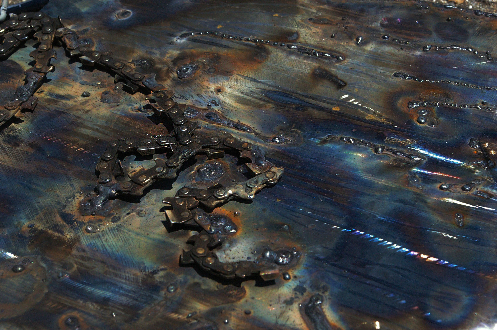
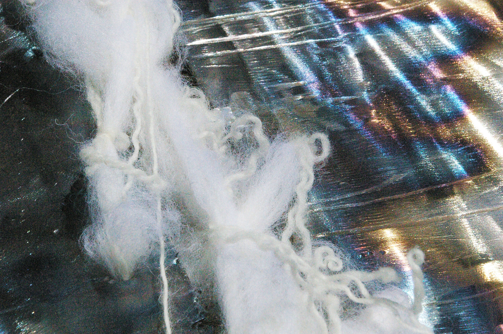

Katharsis
Katharsis is a piece about fragility and resistance. Evoking a sense of vanity, the sculpture is made out of hard, heavy and sharp metal pieces that hold each other with "chains" of wool. Each metal piece holds the one beneath it, the piece that holds all of them is the most ruined, and gradually, each plate seems to deteriorate. Until the last one, that is in the best condition, shining like a mirror. Untouched, waiting to deteriorate.



